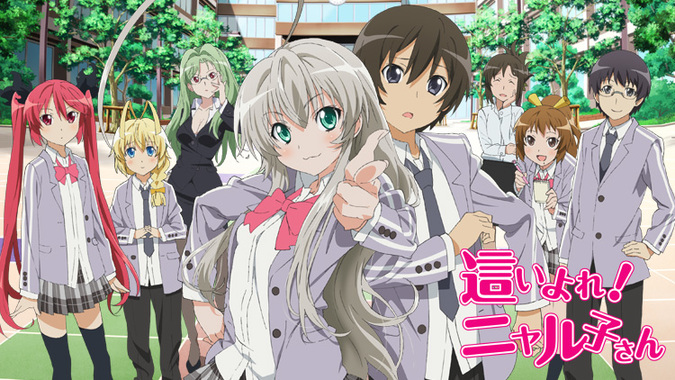
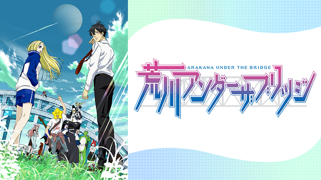

コメディ系
斉木楠雄のΨ難

あらすじ
高校生・斉木楠雄は超能力者である。 テレパシー、サイコキネシス、透視、予知、瞬間移動、千里眼など、何でもかんでも自由自在。 誰もがうらやむ最強の能力は、実は本人にとっては災難を呼ぶ不幸の元凶。 それ故、人前では超能力を封印。目立たず人と関わらずをモットーにひっそり暮らしていた。 しかし何故だか彼の周りには、いつも不思議な人間（生き物）が集まって、次から次へと嵐のように災難が降りかかるのであった！
©麻生周一／集英社・PK学園
キャスト
斉木 楠雄：神谷浩史 鳥束 零太：花江夏樹
燃堂 力 ：小野大輔 照橋 心美：茅野愛衣
海藤 瞬 ：島﨑信長 夢原 知予：田村ゆかり
灰呂 杵志：日野聡 斉木 國春：岩田光央
斉木久留美：愛河里花子
感想
万能な超能力者・斉木楠雄はフツーの暮らしをめざし日々を過ごしていく…
この作品は、独特なキャラがたくさんいて笑いが絶えなかったです
万能な主人公・斉木楠雄が個性豊かなキャラに振り回されるのが面白い、
ギャグアニメを見るならまずはこれだとお勧めできる作品です！
這いよれ!ニャル子さん

あらすじ
「いつもニコニコあなたの隣に這いよる混沌、ニャルラトホテプです♪」
銀髪の美少女が、とてつもなく意味不明なキャッチフレーズとともに現れた！
クトゥルー神話の邪神「這いよる混沌」ニャルラトホテプ、長いので略してニャル子。
「生ける炎」クトゥグアのクー子や、「名状しがたきもの」ハスターのハス太も加えて、底知れぬ暗澹たる恐怖とラブ（クラフト）コメディがここに開幕！
八坂真尋やニャル子を狙って、次々と地球にやって来る邪神たち。
それを迎え撃つニャル子の宇宙CQC。
宇宙規模で繰り広げられる壮絶な事件の真相とは？
はたして、真尋は平和に暮らすことができるのか！？
© 逢空万太・ソフトバンク クリエイティブ/名状しがたい製作委員会のようなもの
キャスト
ニャル子 ：阿澄 佳奈 八坂 真尋 ：喜多村 英梨 クー子 ：松来 未祐
ハス太 ：釘宮 理恵 シャンタッ君：新井 里美 暮井 珠緒：大坪 由佳
八坂 頼子：久川 綾 余市 健彦 ：羽多野 渉 ノーデンス：島田 敏
ニャル夫 ：草尾 毅 ルーヒー・ジストーン：國府田マリ子
感想
普通の人間とクトゥルフ神が織りなす怒涛のハイテンション混沌コメディ
私がコメディ作品を見るようになったきっかけのアニメです。 主人公とクトゥルフ神の三人が繰り広げる非日常がとても面白く見ていて飽きることのないアニメでした。 メインの声優さんが亡くなってしまった為作品の続きが制作される可能性が低いのが残念ですが、コメディ系のアニメで悩んでいるなら間違いなく見るべき作品の一つです。
荒川アンダーザブリッジ

あらすじ
舞台は荒川河川敷。 そこで出逢った勝ち組エリート青年・ 市ノ宮 行（いちのみや こう）＝通称・リクと 自称金星人のホームレス美少女・ニノ。 不器用な二人の恋は時におかしく時に切なく・・・。 そんな二人を中心に、奇怪な河川敷の住人たちが巻き起こす 騒動の日々を描いた元祖電波系新感覚 ハートフルラブ（？）コメディー。
©中村光/スクウェアエニックス・荒川UB製作委員会
キャスト
ニノ：坂本真綾 / 市ノ宮 行（リク）：神谷浩史 / 村長：藤原啓治 / 星：杉田智和 / シスター：子安武人 / マリア：沢城みゆき / ステラ：斎藤千和 / シロ：大塚芳忠 / P子：小見川千明 / 鉄人兄弟 鉄雄：三瓶由布子 / 鉄人兄弟 鉄郎：新谷良子 / 市ノ宮 積：小山力也 / 高井：チョー / 島崎：田中理恵
感想
河川敷の下に住むホームレス電波少女とエリート青年が繰り出す怒涛の恋愛コメディ。
一見コメディ系に全振りだが恋愛系でもある良い作品。
ホームレス系電波少女と圧倒的勝ち組の青年がひょんなことから出会って一緒に住み始める物語。
全く違った世界にいるはずの二人が出会うことによって固執した青年の世界に対する偏見を打ち砕く風刺的作品でもあるように感じた。
コメディ要素もしっかり面白いし恋愛要素も手を抜いていない良作であり、
深く考えると風刺的作品にも思えてくるという味深いアニメでとてもおススメです。